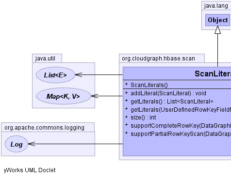
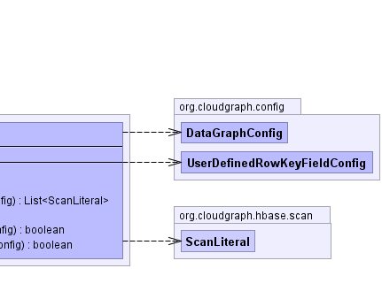

public class ScanLiterals
extends java.lang.Object
ScanLiteral|  |  |
| Constructor and Description |
|---|
ScanLiterals() |
| Modifier and Type | Method and Description |
|---|---|
void |
addLiteral(ScanLiteral scanLiteral) |
java.util.List<ScanLiteral> |
getLiterals() |
java.util.List<ScanLiteral> |
getLiterals(UserDefinedRowKeyFieldConfig fieldConfig) |
int |
size() |
boolean |
supportCompleteRowKey(DataGraphConfig graph)
Returns true if this set of literals can support
a partial row key scan for the given graph
|
boolean |
supportPartialRowKeyScan(DataGraphConfig graph)
Returns true if this set of literals can support
a partial row key scan for the given graph
|
public java.util.List<ScanLiteral> getLiterals()
public java.util.List<ScanLiteral> getLiterals(UserDefinedRowKeyFieldConfig fieldConfig)
public int size()
public void addLiteral(ScanLiteral scanLiteral)
public boolean supportPartialRowKeyScan(DataGraphConfig graph)
graph - the graphpublic boolean supportCompleteRowKey(DataGraphConfig graph)
graph - the graphCloudGraph® is a registered trademark of TerraMeta Software, Inc. Copyright © 2014 - All Rights Reserved.